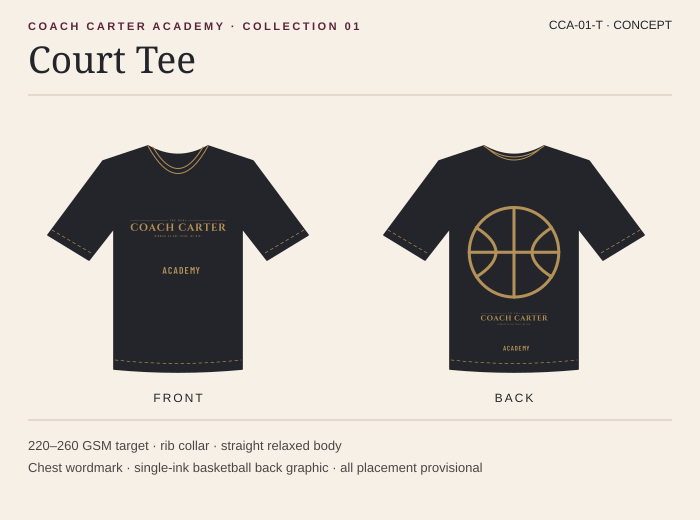
Coach Carter Academy · Design Library
From the hallway
to the hardwood.
The Academy wardrobe starts with two uniforms. The Court Collection is built around basketball. First Whistle is what the team wears to arrive.
Visit the Academy store preview ↗01 / Court Collection
On the court
Editable development drawings. Fit, fabric and print placement are provisional.


Court Short
Download SVG ↓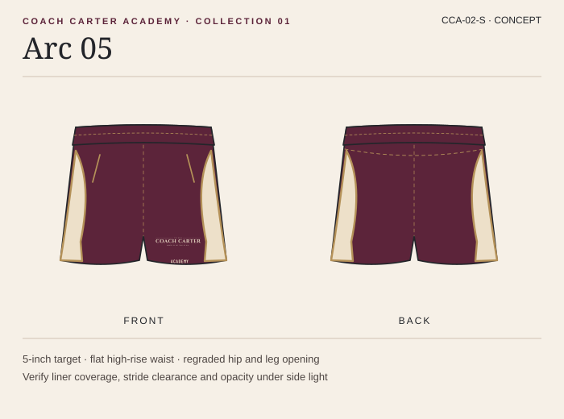
Arc 05
Download SVG ↓

Next Up Short
Download SVG ↓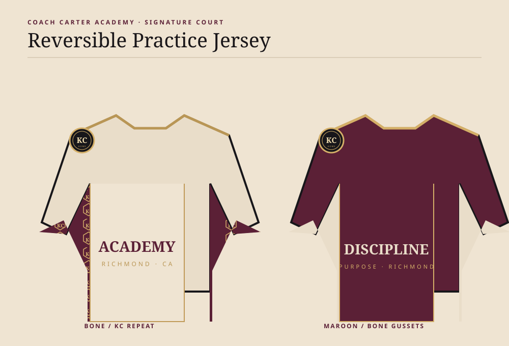
Next Up Jersey
Download SVG ↓

First Team Set
Download SVG ↓02 / First Whistle
Before the game
Soft sport coat, charcoal slacks, bone Oxford. Flash of the Court Map lining when the jacket opens. Separate fit blocks for kids and teens.

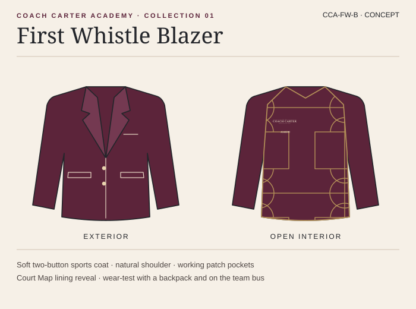
First Whistle Blazer
Download SVG ↓
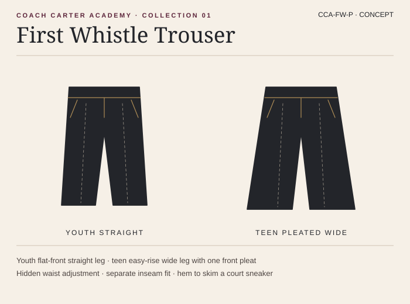
First Whistle Trouser
Download SVG ↓
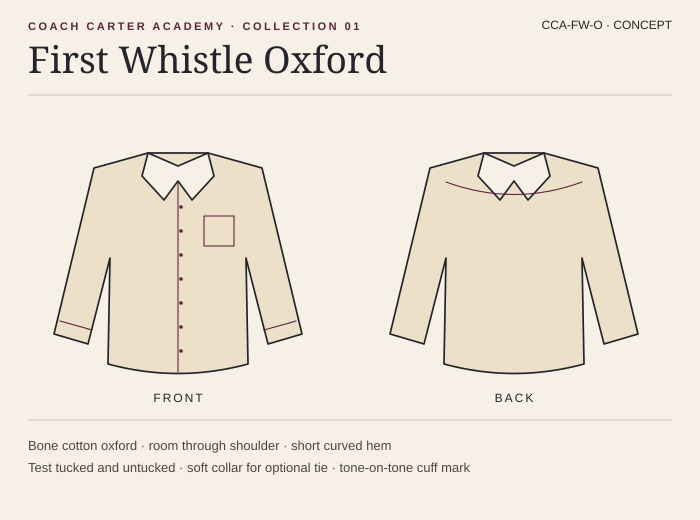
First Whistle Oxford
Download SVG ↓
First Whistle / Campaign lookbook
Last Bell to Tipoff
Six AI styling studies follow Academy players from the school hallway to the court. The lining repeat and warmup flats are editable design concepts.
Explore the six looks in the store ↗
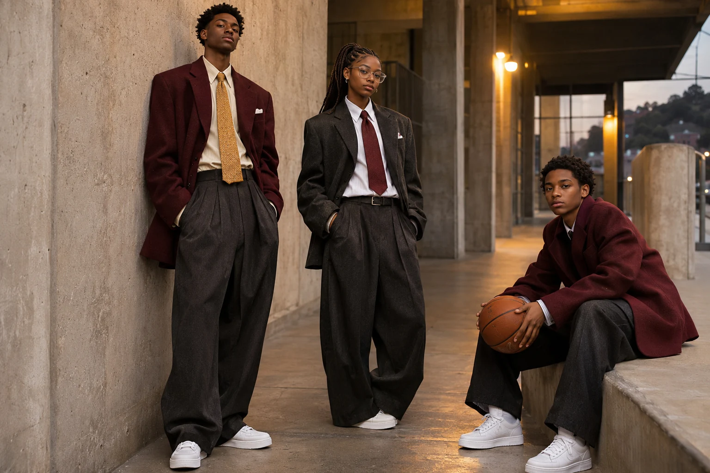
Campaign lookbook
Download PDF ↓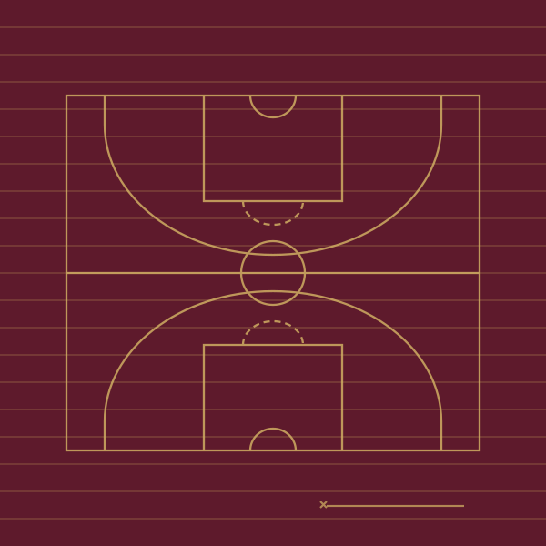
Contract Grid lining
Download SVG ↓
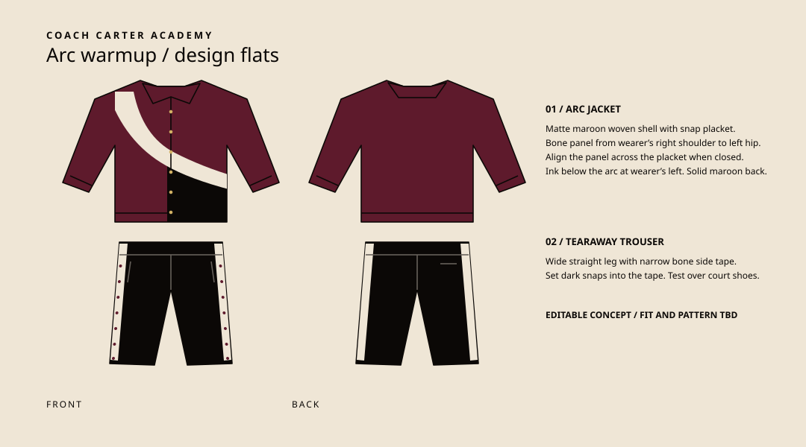
Arc warmup flats
Download SVG ↓
03 / Art Direction
The Academy roster
Use these studies to brief a photographer and stylist. Store product photography will come from real athletes in approved samples.
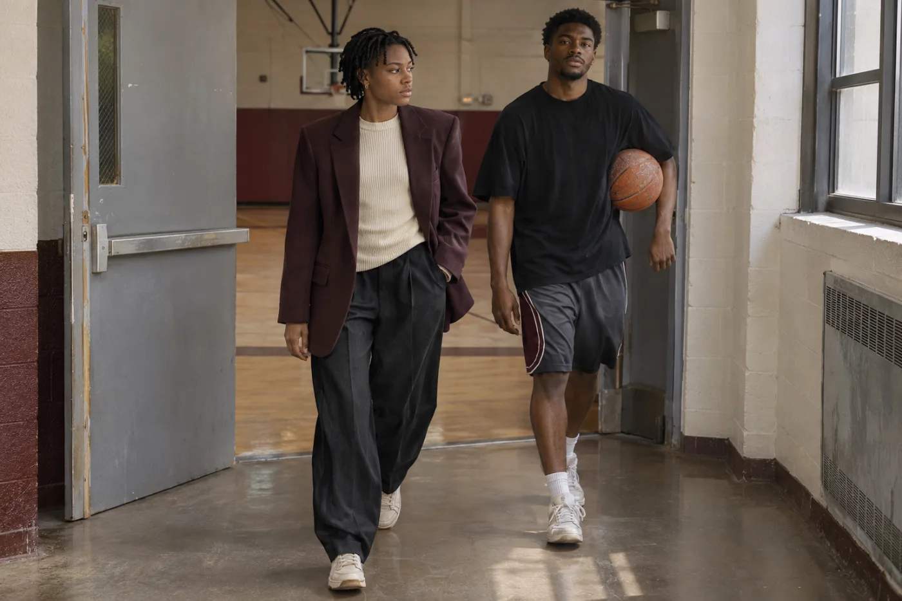
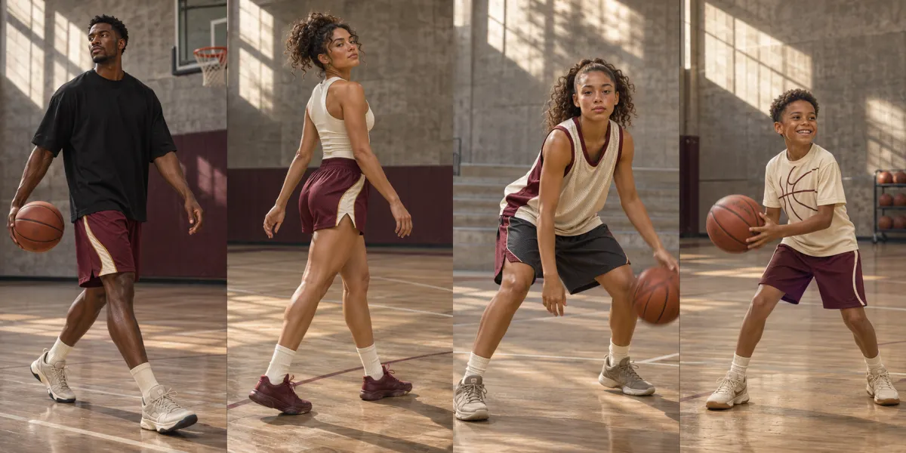
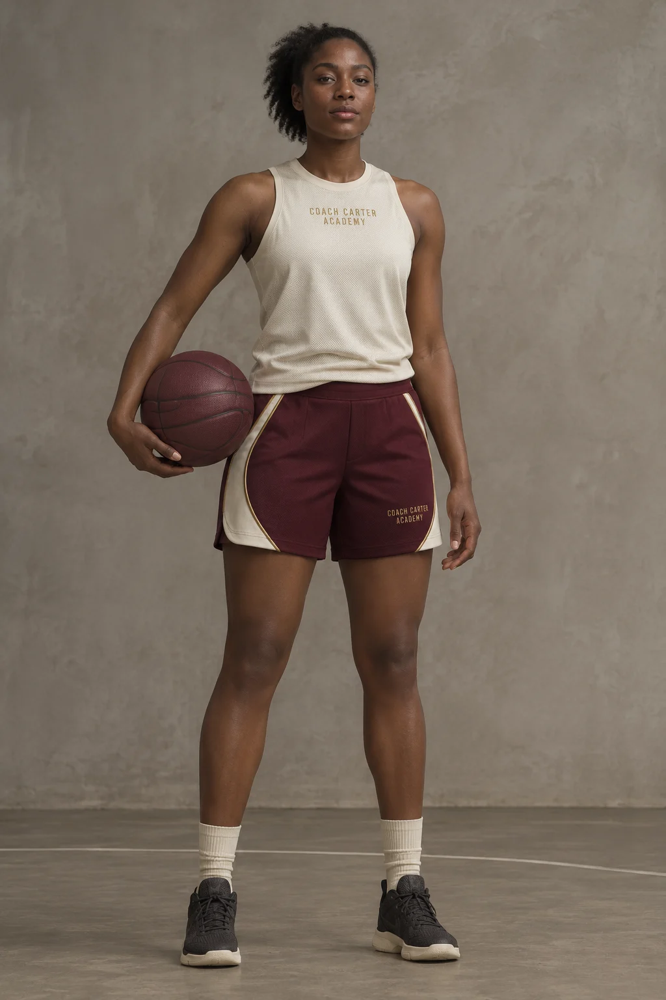
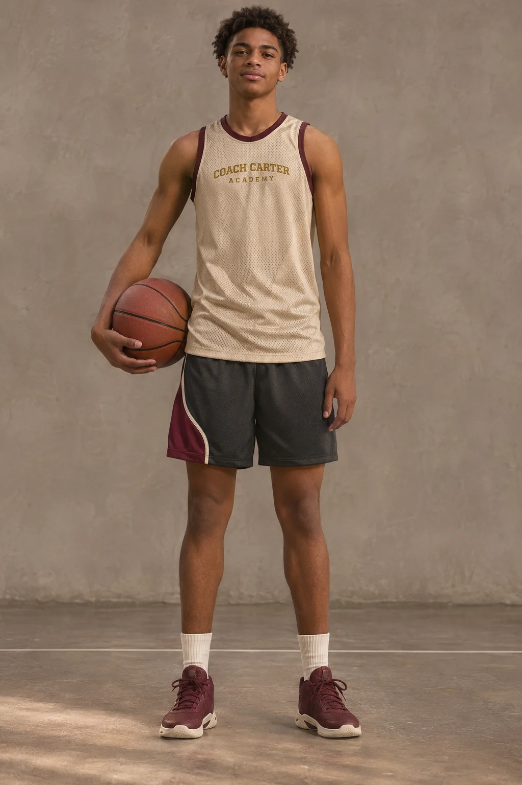
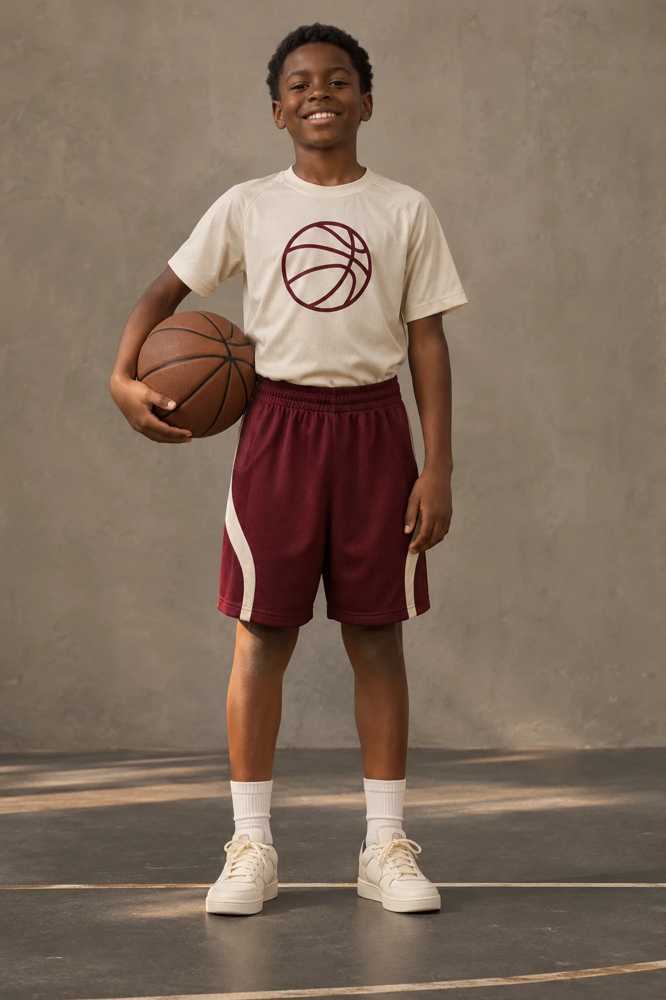
04 / Editable Brand Assets
The Academy marks
Use the Academy wordmark for all gear. The Arc panel carries the silhouette. The basketball and full-court map carry the artwork.


Download digital color, typography and asset tokens ↓ · Maroon wordmark for light backgrounds ↓